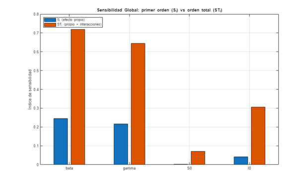
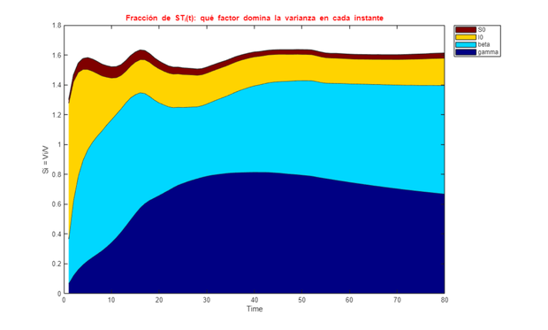

Contents
- 1. Configuración del Entorno
- 2. Modelo SIR sobre TODO el espacio de factores (salida: Infectados)
- 3. Muestreo base para el estimador de índices
- 4. Análisis de sensibilidad (método Xiao, el estimador propio de la toolbox)
- 5. Gráfica de barras: S_i vs ST_i por factor
- 6. Sensibilidad dependiente del tiempo (¿cuándo importa cada factor?)
- 7. Comparación entre métodos estimadores (robustez del resultado)
- 8. PREGUNTAS Y EJERCICIOS PARA EL ESTUDIANTE
% DEMO_04_SENSIBILIDAD Análisis de Sensibilidad Global (GSA) % Curso guiado de GSUA-CSB % % Cuantificamos cuánto contribuye cada factor a la varianza de la salida: % - Índices de Sobol de primer orden S_i (efecto propio del factor), % - Índices de orden total ST_i (efecto propio + interacciones), % - Índices dependientes del tiempo S_i(t), ST_i(t), % - Comparación entre métodos estimadores (Xiao vs Saltelli). % % Con esto decidimos qué parámetros ESTIMAR (los influyentes) y cuáles FIJAR % (los que casi no afectan la salida). Modelo: SIR continuo, salida Infectados.
1. Configuración del Entorno
clc; clear; close all; % --- Localización portable de la toolbox GSUA-CSB (ver Módulo 01) ----------- if isempty(which('gsua_dataprep')) candidatos = { fullfile(fileparts(mfilename('fullpath')), '..', '..', '..', 'Functions') % dentro del repo clonado fullfile(getenv('USERPROFILE'), 'MATLAB Drive', 'Toolbox', 'Functions') fullfile(getenv('USERPROFILE'), 'Documents', 'MATLAB', 'GSUA-CSB', 'Functions') }; for k = 1:numel(candidatos) if isfolder(candidatos{k}), addpath(candidatos{k}); break; end end if isempty(which('gsua_dataprep')) error(['No se encontró la toolbox GSUA-CSB en el path de MATLAB. ' ... 'Instala GSUA-CSB.mltbx o añade su carpeta Functions con addpath(...).']); end end model1_path = fullfile(fileparts(mfilename('fullpath')), '..', '..', ... '01_Introduccion_Modelos', 'matlab'); if isfolder(model1_path), addpath(model1_path); else, error('Falta el Módulo 01 en %s', model1_path); end fprintf('=========================================================================\n'); fprintf(' MÓDULO 04: ANÁLISIS DE SENSIBILIDAD GLOBAL (GSA) \n'); fprintf('=========================================================================\n\n');
========================================================================= MÓDULO 04: ANÁLISIS DE SENSIBILIDAD GLOBAL (GSA) =========================================================================
2. Modelo SIR sobre TODO el espacio de factores (salida: Infectados)
Para GSA usamos rangos amplios: el análisis mide la importancia de cada factor a lo largo de todo su rango de variación plausible.
ranges_sir = [
0.0001, 0.0008; % beta
0.05, 0.20; % gamma
900, 999; % S0
1, 50 % I0
];
[T, ~] = gsua_dataprep('sir_continuous_userdefined', ranges_sir, ...
'domain', [0, 80], ...
'names', {'beta', 'gamma', 'S0', 'I0'}, ...
'out_names', {'Susceptibles', 'Infectados', 'Recuperados'});
T.Properties.CustomProperties.output = 2; % Infectados
Setting environment to work with user-defined function
3. Muestreo base para el estimador de índices
El método necesita N*(Np/2+1) evaluaciones. Con N=500 y 4 factores => 1500 corridas.
N = 500; M = gsua_dmatrix(T, N, 'Method', 'LatinHypercube');
4. Análisis de sensibilidad (método Xiao, el estimador propio de la toolbox)
Salidas: T con los índices escritos dentro (T.Si, T.STi, T.Si_vec, T.STi_vec), Y = matriz de trayectorias, J = costo escalar por corrida.
[T, Y, J] = gsua_sa(M, T, 'SensMethod', 'Xiao', 'parallel', false, 'verbose', false); %#ok<ASGLU> names = T.Properties.RowNames; fprintf('Índices de sensibilidad (método Xiao):\n'); disp(table(T.Si, T.STi, 'RowNames', names, 'VariableNames', {'S_i','ST_i'})); [~, idxMax] = max(T.STi); [~, idxMin] = min(T.STi); fprintf('Factor MÁS influyente : %s (ST_i = %.3f)\n', names{idxMax}, T.STi(idxMax)); fprintf('Factor MENOS influyente: %s (ST_i = %.3f)\n', names{idxMin}, T.STi(idxMin)); fprintf('=> Regla práctica: estima los factores con ST_i alto; considera FIJAR los de ST_i ~ 0.\n\n');
Índices de sensibilidad (método Xiao):
S_i ST_i
_________ ________
beta 0.2453 0.71937
gamma 0.2165 0.64413
S0 0.0021145 0.070469
I0 0.041585 0.30662
Factor MÁS influyente : beta (ST_i = 0.719)
Factor MENOS influyente: S0 (ST_i = 0.070)
=> Regla práctica: estima los factores con ST_i alto; considera FIJAR los de ST_i ~ 0.
5. Gráfica de barras: S_i vs ST_i por factor
figure('Name', 'Índices de Sensibilidad S_i y ST_i'); bar([T.Si, T.STi]); set(gca, 'XTickLabel', names); ylabel('Índice de sensibilidad'); title('Sensibilidad Global: primer orden (S_i) vs orden total (ST_i)'); legend({'S_i (efecto propio)', 'ST_i (propio + interacciones)'}, 'Location', 'northwest'); grid on; % Lectura: ST_i notablemente mayor que S_i indica INTERACCIONES entre factores.

6. Sensibilidad dependiente del tiempo (¿cuándo importa cada factor?)
time = linspace(0, 80, size(T.STi_vec, 2)); figure('Name', 'Sensibilidad total dependiente del tiempo'); gsua_plot('FractionalSensitivityArea', T, T.STi_vec, time); title('Fracción de ST_i(t): qué factor domina la varianza en cada instante');

7. Comparación entre métodos estimadores (robustez del resultado)
Un buen resultado de GSA no debería depender fuertemente del estimador elegido. Partimos de una tabla FRESCA para el segundo método: la anterior ya lleva escritas las propiedades del método Xiao y reutilizarla generaría un warning inofensivo.
[Tcmp, ~] = gsua_dataprep('sir_continuous_userdefined', ranges_sir, ... 'domain', [0, 80], ... 'names', {'beta', 'gamma', 'S0', 'I0'}, ... 'out_names', {'Susceptibles', 'Infectados', 'Recuperados'}); Tcmp.Properties.CustomProperties.output = 2; [Tsalt, ~, ~] = gsua_sa(M, Tcmp, 'SensMethod', 'Saltelli', 'parallel', false, 'verbose', false); fprintf('Comparación ST_i (Xiao vs Saltelli):\n'); disp(table(T.STi, Tsalt.STi, 'RowNames', names, 'VariableNames', {'Xiao','Saltelli'}));
Setting environment to work with user-defined function
Comparación ST_i (Xiao vs Saltelli):
Xiao Saltelli
________ ________
beta 0.71937 0.56491
gamma 0.64413 0.58365
S0 0.070469 0.023159
I0 0.30662 0.13353
8. PREGUNTAS Y EJERCICIOS PARA EL ESTUDIANTE
fprintf('\n=========================================================================\n'); fprintf(' PREGUNTAS DE ANÁLISIS Y EJERCICIOS DOCENTES (MÓDULO 04) \n'); fprintf('=========================================================================\n'); fprintf('1. ¿Qué factor domina la varianza de Infectados? ¿Coincide con tu intuición epidemiológica?\n'); fprintf('2. ¿Para algún factor ST_i >> S_i? ¿Con quién interactúa? (pista: beta, S0 y gamma via R0).\n'); fprintf('3. Cambia N de 500 a 2000. ¿Se estabilizan los índices? (convergencia del estimador).\n'); fprintf('4. Si fijas el factor menos sensible, ¿cambia mucho la banda de incertidumbre del Módulo 03?\n'); fprintf('=========================================================================\n\n');
========================================================================= PREGUNTAS DE ANÁLISIS Y EJERCICIOS DOCENTES (MÓDULO 04) ========================================================================= 1. ¿Qué factor domina la varianza de Infectados? ¿Coincide con tu intuición epidemiológica? 2. ¿Para algún factor ST_i >> S_i? ¿Con quién interactúa? (pista: beta, S0 y gamma via R0). 3. Cambia N de 500 a 2000. ¿Se estabilizan los índices? (convergencia del estimador). 4. Si fijas el factor menos sensible, ¿cambia mucho la banda de incertidumbre del Módulo 03? =========================================================================